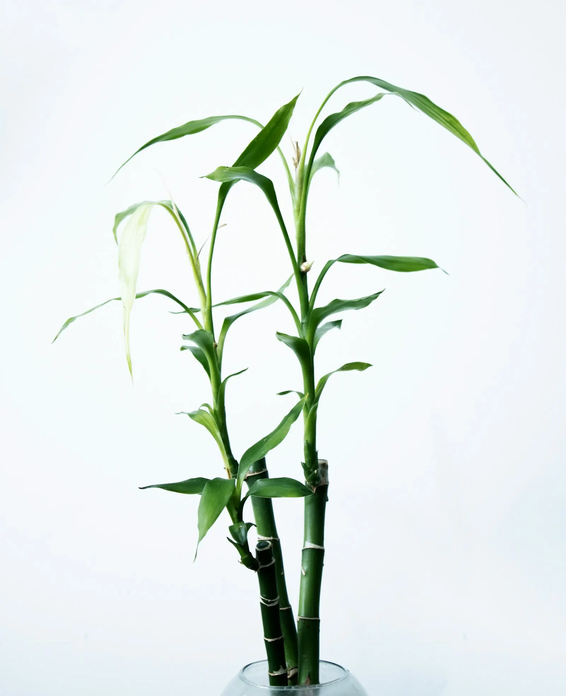

Orkideler, narin görünüşlerinin aksine oldukça dayanıklı bitkilerdir. Doğru ortamı bulduklarında yıllarca çiçek açabilirler. Phalaenopsis (Kelebek Orkide) en popüler tür olup, evde bakımı en kolay olan orkide çeşididir. İşte orkidenizi mutlu etmek için bilmeniz gereken 5 altın kural.
1. Işık Faktörü
Orkideler ışığı sever ama doğrudan güneşe maruz kalmayı sevmez. Tül perde arkasından gelen süzülmüş sabah güneşi onlar için en iyi vitamin takviyesidir. Doğu veya kuzeybatı cepheli pencereler idealdir.
Yapraklara dikkat edin: Yapraklar koyu yeşilse yeterli ışık almıyor demektir. Açık yeşil ve biraz sarımsı tonlardaysa ışık idealdir. Yapraklarda mor ya da kırmızımsı lekeler varsa, aşırı güneş aldığı anlamına gelir — bitkiyi hemen daha gölge bir yere taşıyın.
2. Daldırma Yöntemi ile Sulama
Orkidenizi üstten sulamak yerine, haftada bir kez saksısıyla birlikte su dolu bir kaba daldırın. 15-20 dakika bekletip süzülmesini sağlayın. Bu yöntem köklerin suya doymasını sağlar ve klor gibi zararlı maddelerin buharlaşmasına yardımcı olur.
Kök rengi rehberinizdir: Kökler grileşmişse ve kuru görünüyorsa su istiyor demektir. Parlak yeşil renkteyse tok, sulamaya gerek yoktur. Aşırı sulama kaynaklı sorunlar, kurumayla ilgili sorunlardan çok daha sık görülür — şüpheye düştüğünüzde sulamayı bir gün erteleyin.
3. Şeffaf Saksı Kuralı
Orkideler mutlaka şeffaf, delikli saksılarda yetiştirilmelidir. Bunun bilimsel bir nedeni var: orkide kökleri fotosentez yaparak enerji üretir. Karanlık saksılar bu süreci engeller ve köklerin sağlığını olumsuz etkiler.
Ayrıca şeffaf saksı, köklerin rengini görüp sulama zamanını anlamanızı kolaylaştırır. Saksı değişimi yaparken, mevcut saksıdan yalnızca 1-2 cm daha büyük bir saksı seçin — orkideler sıkı ortamları sever. Toprak olarak ise kesinlikle normal bitki toprağı kullanmayın; orkide kabuğu (çam kabuğu) veya sphagnum yosunu tercih edin.

4. Nem ve Isı Dengesi
Orkideler tropikal bitkilerdir ve %50-70 arası nem severler. Ev ortamında bunu sağlamak için saksının altına çakıl taşları ve su dolu bir tepsi koyabilirsiniz (saksı suya değmemeli). Ayrıca yapraklarına kireçsiz su fısfıslamak da onları mutlu eder.
Sıcaklık olarak gündüz 20-25°C, gece ise 16-18°C idealdir. Gece-gündüz sıcaklık farkı (en az 5°C) çiçeklenmeyi teşvik eder. Sonbahar aylarında pencereyi hafifçe aralık bırakmak bu sıcaklık farkını doğal yoldan sağlayabilir. Ancak orkideyi soğuk cereyanından mutlaka koruyun.
5. Çiçeklendirme ve Budama
Orkidenizin çiçekleri döküldüğünde dalı hemen kesmeyin. Dalın üzerinde küçük, uyku halindeki "göz" denilen tomurcuklar bulunur. Solmuş çiçek dalını, sağlıklı bir gözün 1 cm üzerinden kesin — bu noktadan yeni bir dal ve çiçekler gelebilir.
Dal tamamen sararmış ve kurumuşsa, o zaman dibinden kesin. Budama işlemleri sırasında makası kesinlikle alkol veya çakmak aleviyle sterilize edin — bu, mantar hastalıklarının önlenmesi için kritiktir.
Orkide Hastalıkları ve Çözümleri
Sağlıklı bir orkide yetiştirmenin bir parçası da olası sorunları erken fark etmektir:
- Sararan yapraklar: Alt yaprakların sarılması normaldir (yaşlanma). Ancak tüm yapraklar sarıyorsa, aşırı sulama veya yetersiz ışık söz konusudur.
- Yumuşayan ve siyahlaşan kökler: Kök çürümesi belirtisi. Saksıdan çıkarın, çürük kökleri sterilize makasla kesin, yaraya tarçın tozu sürün ve yeni kabuğa dikin.
- Yapraklarda beyaz pamuksu lekeler: Un biti (mealybug) istilası. Alkolle ıslatılmış pamukla silin veya neem yağı solüsyonu uygulayın.
- Yaprak uçlarının kararması: Genellikle düşük nem veya aşırı gübre kaynaklıdır.